대부분의 신호처리는 주파수 공간으로 알려진 수학적인 공간에서 이루어진다. 주파수 영역으로의 변환은 [모든 파형(波形)은 단순한 정현파의 합으로 표현할 수 있다]라는 개념을 기초로 하여 이루어 진다. 아래 [그림 1(a)]과 같은 파형은 일반적인 신호 파형이다. 일반적인 신호는 복합적인 여러 성분을 가지므로, 이를 부분적으로 표현하는 (a-1), (a-2), (a-3)의 3개의 다른 주파수를 가진 정형파로 분해할 수 있다.
이 과정을 한가지 예로서 설명을 하자면, 자연 환경이 나무, 돌, 화초등 여러 가지 다양한 사물로 나누어 지듯이 일반적인 신호도 여러 가지 개개의 특징적인 신호들로 분류할 수 있다는 것을 의미한다. 그러므로 하나의 파형으로 생각하면 분석하기 힘든 임의의 신호를 여러개의 신호로 분류하여, 각각의 신호를 분석하여 원신호로 나타내는 과정을 수행함으로서 영상 데이터를 처리할 수 있는 것이다.
이러한 생각을 가지고 주파수 세계를 차례차례 살펴보자. 아래 그림에서 (a-1)을 살펴보면, 파형이 같은 모양으로 반복하는 것을 알 수 있다. 이러한 파(波)를 주파수 세계에서는 정현파라고 부르는데, 이 정현파는 [그림 2]에서 볼 수 있는 것과 같이 실선으로 그려진 파형(진폭 A)과 위상 ø으로 나타낼 수 있다. 마찬가지로, (a-2), (a-3)의 신호도 마찬가지로 [그림 3]과 같이 가로축이 주파수 f이고 세로축이 진폭 A인 그래프와, 가로축이 주파수 f이고 세로축이 위상 ø인 그래프로 나타낼 수가 있다.
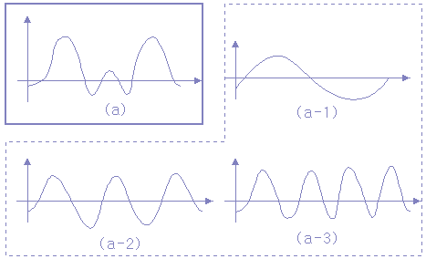
[그림 1] 파형을 정현파로 분해
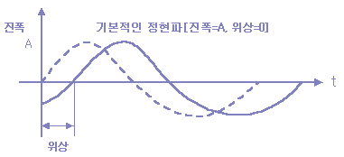
[그림 2] 정현파의 진폭과 위상
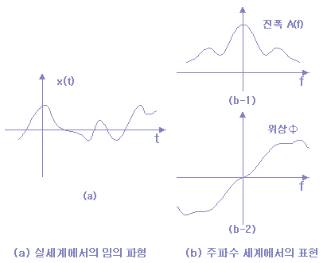
[그림 3] 퓨리에 변환
위의 과정을 통하여 우리는 일반적인 신호를 [그림 3]의 주파수의 세계로 변환할 수 있게 된다.
위의 과정을 수식적으로 살펴보자. 실제의 세계(시간 영역)와 주파수의 세계의 관계를 수식으로 나타내면,
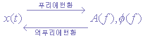 [식 1]
이 되고, 이 변환을 퓨리에(Fourier)변환 이라고 부른다 (직교 변환의한 종류 임).
퓨리에 변환은 보통 진폭 A와 위상 ø를 같이 나타내므로, 복소수 표시를 사용한다.
복소수란 실수부(real-part)와 허수부(imaginary-part)로 이루어지는 수의 형태를 말한다.
따라서, 복소수는
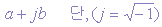 [식 2]
로 표기한다.
이 복소수를 이용하는 경우에는,
진폭과 위상을 구별해서 다루지 않고 함께 다룰 수 있으므로 여러 가지 변환을 하는데 있어서 매우 편리하다.
따라서 [식 1]의 퓨리에 변환은 복소수함수 X(f)를 사용해서 다음과 같이 나타낸다.
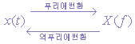 [식 3]
이 퓨리에 변환과정의 결과는 다음과 같은 식이 된다.
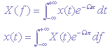 [식 4]
위의 식은 주파수 세계에서 영상 데이터 처리의 기초가 되는 매우 중요한 식이다.
이제 이 수식을 프로그램 적으로 살펴보자.
이것을 하기 위해서는 먼저, 컴퓨터 세계와 수학 세계의 차이점을 살펴 보아야 한다.
이 차이점은 보통 2가지로 이야기할 수 있는데, 하나는 우리가 다루는 신호 x(t)는 [그림 4]의 왼쪽 그림과 같이 연속 신호(아날로그 신호)이지만, 컴퓨터를 이용하여 다루는 신호는 [그림 4]의 오른쪽 그림과 같은 표본화된 디지털(digital) 신호라는 점이고,
다음 하나는, 수학적으로 공식을 전개할 때는 무한대의 범위를 영역으로 하지만, 컴퓨터 세계에서는 한정된 범위(유한)에서 계산을 한다는 점이다. 이와 같이 자연 신호를 이산적인 신호(즉, 연속적인 흐름이 아님)로 나타내는 퓨리에 변환을 이산 퓨리에 변환(DFT:Discrete Fourier Transform)이라고 부른다. 그럼 이산 퓨리에 변환에 대해서 살펴보자. DFT는 [식 4]의 Fourier변환을 이산적으로 변환하여 유도할 수 있다.
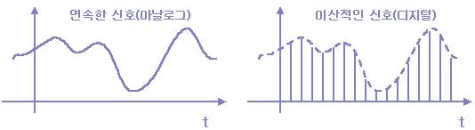
[그림 4] 아날로그와 디지털
만약 입력 신호가 x(0), x(1), x(2), ....., x(N-1)의 이산값이라고 하면, 그 주파수 영역에의 변환결과(복소수)도 [그림 4]에 나타낸 것과 같이 N개의 이산값이 되고, 그것을 X(0), X(1), X(2), ....., X(N-1)로 하면, 다음의 관계가 성립한다.
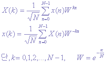 [식 5]
위의 수식이 DFT의 기본 수식이다. 적분기호가 제거되고, 덧셈의 식(sum)이 되었지만, 회전자 라고 하는 W는 처리하기 곤란한 항이다. 그 래서, 이 W를 오일러 공식을 이용하여 다음과 같이 변환한다.
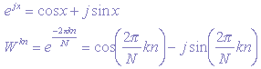 [식 6] 오일러 공식
[식 6]을 [식 5]에 대입하면, 삼각함수와 곱셈의 덧셈연산이 되므로 컴퓨터를 이용한 연산이 가능하게 되었지만, 그 연산량은 상당히 방대하게 된다. 이 방대한 연산 시간문제를 해결하기 위하여, 고안된 변환이 고속 퓨리에 변환(FFT:Fast Fourier Transform) 이라고 하는 알고리즘으로서, 데이터 수가 2의 멱제곱의 경우 계산량을 대폭적으로 줄일 수 있다. FFT의 실행 과정을 나타내는 프로그램을 살펴보자.
¡ 1차원 FFT를 수행하는 함수
/****** function for 1 dimension Fast Fourier Transform *//*****/
fft1(float a_rl[],float a_im[],int inv){
int I,j,k,w,j1,j2;
int numb,lenb,timb;
float s_tbl[64],c_tbl[64];
float xr,xi,yr,yi,nrml;
float xx,deg;
xx = ((-pi)*2.0)/(float)64;
if(inv < 0) xx = -xx; /* if Inverse Fast Fourier Transform */
/* make sine and cosine table */
for(i = 0; i < 64; i++) {
deg = (float)i*xx; s_tbl[i] = sin(deg); c_tbl[i] = cos(deg);
}
if(DC == 1)
for(i = 1; i < 64; i+=2) { a_rl[i] = -a_rl[i]; a_im[i] = -a_im[i]; }
numb = 1; lenb = 64;
/* FFT excution routine */
for(i = 0; i < 8; i++) {
lenb /= 2; timb = 0;
for(j = 0; j < numb; j++) {
w = 0;
for(k = 0; k < lenb; k++) {
j1 = timb + k ; j2 = j1 + lenb;
/* 두 개의 부분으로 나눌 때 상하의 대응하는 위치 지정 */
xr = a_rl[j1] ; xi = a_im[j1];
/* 상단의 실수, 허수 부분 계산 값을 변수에 입력 */
yr = a_rl[j2] ; yi = a_im[j2];
/* 하단의 실수, 허수 부분 계산 값을 변수에 입력 */
a_rl[j1] = xr + yr; a_im[j1] = xi + yi;
/* 상단의 실수, 허수 부분 계산 값을 배열에 입력 */
xr = xr - yr ; xi = xi - yi;
/* 하단의 실수, 허수 부분 계산 값을 배열에 입력 */
a_rl[j2] = xr*c_tbl[w] - xi*s_tbl[w];
a_im[j2] = xr*s_tbl[w] + xi*c_tbl[w];
w += numb;
}
timb += (2*lenb);
}
numb *= 2;
}
birv(a_rl); birv(a_im); /* 비트 연산 */
if(DC == 1) /* DC성분을 중앙에 쏠리게 하고 싶은 경우 */
for(i = 1; i < 64; i += 2) { a_rl[i] = -a_rl[i]; a_im[i] = -a_im[i]; }
nrml = 1.0/sqrt((float)64);
for(i = 0; i < 64; i++) { a_rl[i] *= nrml; a_im[i] *= nrml; }}
¡ 비트연산 수행 루틴
birv(float a[64]){
int I,ii,k,bit;
static float b[64];
for(i = 0; i < 64; i++) {
for(k = 0, ii = i, bit = 0; ; bit <<=1,ii>>=1) {
bit = (ii & 1) | bit;
if(++k == 6) break; }
b[i] = a[bit]; }
for(i = 0; i < 64; i++) a[i] = b[I];/* 처리한 값을 다시 배열에 저장 */
}
영상의 2차원 퓨리에 변환
앞 단원의 내용은 신호 x(t)가 1차원인 경우에 대한 설명이었다. 그러나, 영상 데이터의 경우는 평면이기 때문에 신호는 x(i, j)라고 하는 2차원에서 살펴 볼 필요가 있다. 2차원은 수직과 수평의 두 개의 좌표축으로 나타내는 평명이라 할 수 있다. 그러므로 2차원 FFT를 취하고자 한다면, 1차원 FFT를 2번 수행(수평, 수직)하면 된다.
¡ 2차원 FFT를 수행하는 루틴
/****function for 2 dimension Fast FourierTransform****/
float b_rl[64][64];
float b_im[64][64];
fft2(float a_rl[][64],float a_im[][64],int inv){
int I;
/* excute 1-dimension FFT ( horizontal ) */
for(i = 0; i < 64; i++) fft1(a_rl[I],a_im[i],inv);
rvmtx(a_rl,b_rl); rvmtx(a_im,b_im); /* transpose matrix */
/* excute 1-dimension FFT ( vertical ) */
for(i = 0; i < 64; i++) fft1(b_rl[I],b_im[i],inv);
rvmtx(b_rl,a_rl); rvmtx(b_im,a_im); /* transpose matrix */
printf("FFT_2D PASSED !!!\n");}
2차원 FFT를 수행시킨 결과 영상은 다음과 같다.
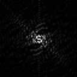
(a) 원 영상 (b) 주파수 처리 (c) 복원 영상
[그림 5] 2-FFT 결과 영상